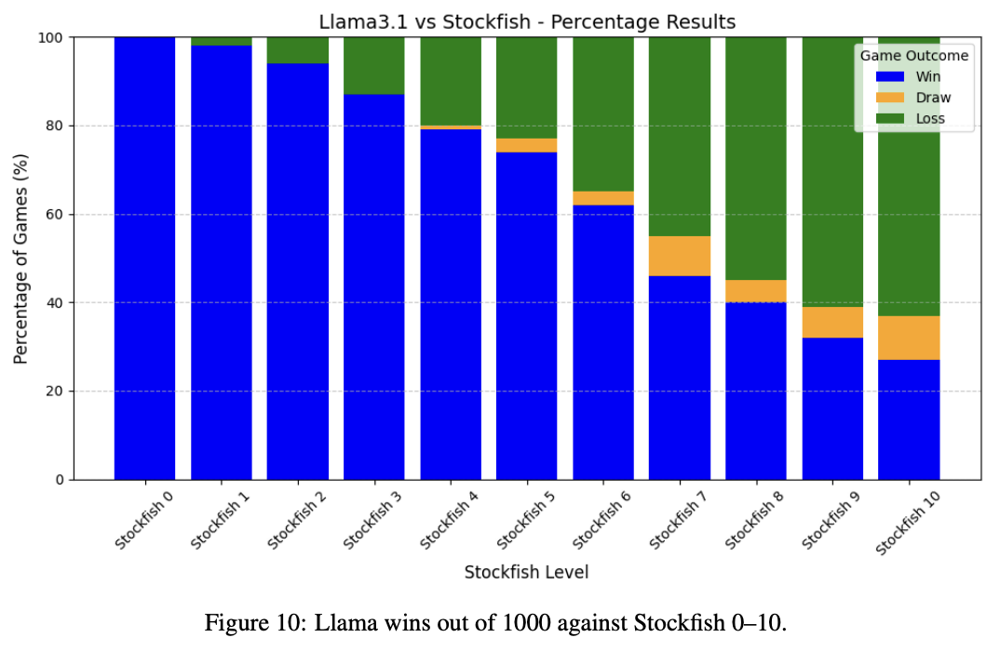
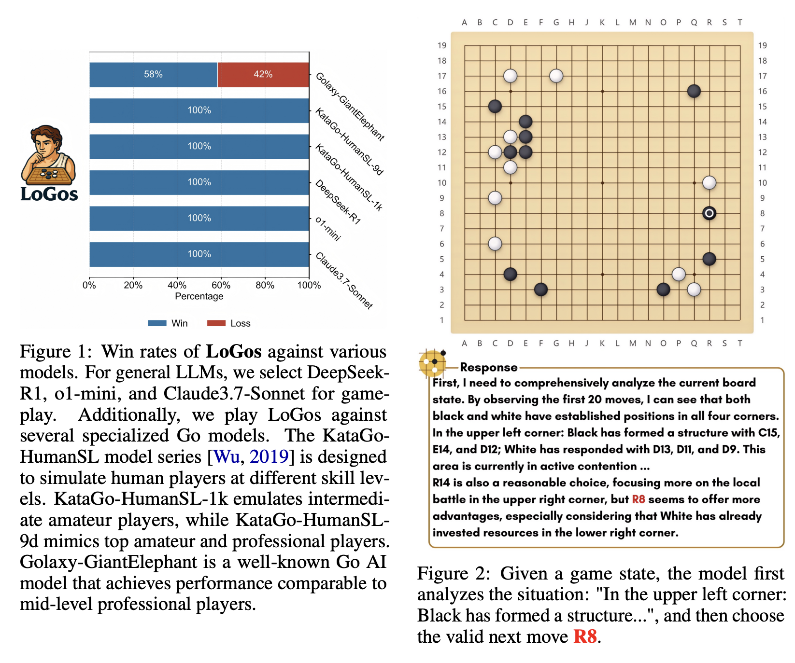
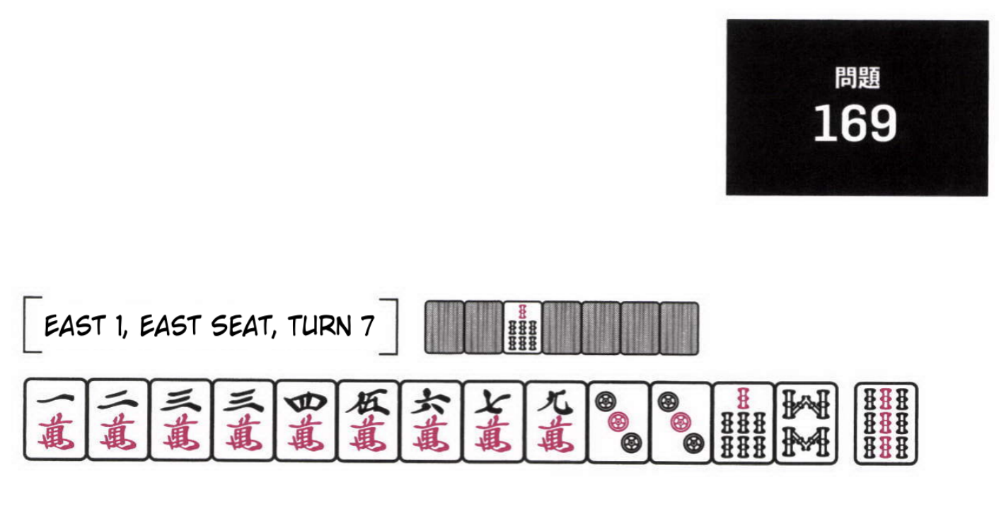
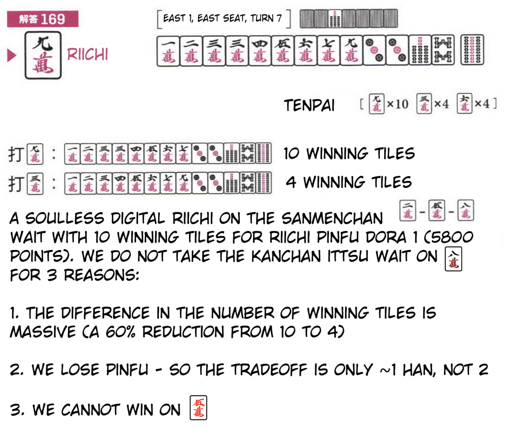
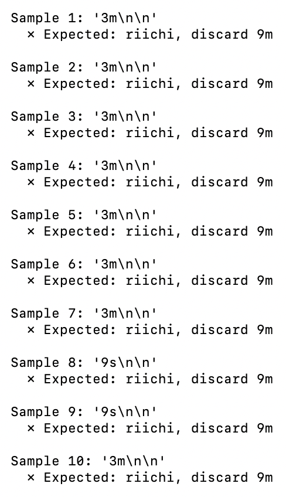

Riichi Mahjong LLM
Table of Contents
Teaching LLMs to Play Mahjong
Abstract
Riichi Mahjong hits the sweetspot for LLM-as-game-playing-agent experimentation. It has plentiful high-level data, it's well described as text, it's easily described in a markovian way, and it doesn't have lots of easily available engines for it already. In this work I teach an LLM how to get good at mahjong. The goal is threefold: first, to train a language model to play the game better than me; second, to lay the foundation for a mahjong model which can explain why moves are good or bad; third, to reproduce some interesting papers I read recently on a novel environment.
Introduction and Related Work
Lots of work has been done on training LLMs to perform well at games, mostly popular traditional ones like Chess. I won't go into too much detail about everything out there (since this is a get-hands-dirty holiday break project) but two papers are standouts motivating my approach here.
Causal Masking on Spatial Data: An Information-Theoretic Case for Learning Spatial Datasets with Unimodal Language Models trained a 1.3B LLM on chess positions annotated with Stockfish. They do 200k steps at batch size 128, gradient accumulation 32 for an effective batch size of 4096 samples per step. At 200k steps that's about 820 million positions. The model achieved a measured Elo of ~2600, matching roughly grandmaster strength1.

I was really impressed by this paper! A 7B parameter model distilling stockfish this well would have been pretty mundane, but a 1.3B model being so successful opened up a world of possibilities, since fine-tuning a model of this size is not really a huge lift for somebody with the right expertise. They also point to Ruoss et al 2024 which trained a smaller transformer (270M) from scratch on a much larger dataset to get an even better result (2895 rating)2.
Mixing Expert Knowledge: Bring Human Thoughts Back To the Game of Go trained a 7B and 32B model on Go by distilling the moves from a strong RL model upon a language model cold-started with human annotations of Go positions. This model reached 9d strength, which is very strong (but human level, compared to superhuman RL bots which crushed even the very best players). Critically, however, these models were able to provide actual reasoning for why the moves it selected were good or bad.

I saw this paper and promptly flipped out at the implications of it, it was by far my favorite result from NeurIPS 2025. Anybody who has tried to analyze their games with an engine has lots of experience not understanding why they should have done X move instead of Y move. This paper points to a future where you could just ask! There's a lot of interesting applications this opens up if the result holds for other settings, obviously making it relevant as a north star for our mahjong project.
Gathering Data
Ample data from strong players is freely available, since mahjong players are playing mahjong roughly all the time. Amber from Path of Houou has posted a large database of five years' worth of Tenhou replays from strong players, which is a useful starting point for training something like this. Each year has about 250 thousand hanchans in it, so five years of games should result in roughly 1.25 million hanchans, which likely result in something like 800 million positions.
Previous examples mentioned will distill the policy of a very strong model (e.g. stockfish) by annotating every position with the oracle's top move. There exist strong RL-powered models for riichi mahjong like Mortal or MAKA, but these are not freely available to download, and do not offer batch processing for large quantities of games. However, it's possible we don't need to annotate games via the oracle at all.
In Transcendence: Generative Models Can Outperform The Experts That Train Them they showed that models trained on low level chess games will produce a model which is stronger than any individual player. This is because bad moves can be framed as noise; on average bad players still play reasonable moves, and have decorrelated errors from one another3. Since Deep Learning is Robust to Massive Label Noise, the resulting model is strong even when all the annotators are weak. Similar experiments were done even way back before chess computers were ubiquitous – Garry Kasparov vs The World was one such game where thousands of players voted on what move to play against world champion Garry Kasparov, which produced an interesting and competitive game despite the average voter being way, way weaker than Kasparov.
Ergo, we will be training the model to be a pure imitation learning model, for now. This should simplify the workflow substantially at the starting phase of this project, since it's now just framed as a straightforward supervised learning problem the same way any other SFT workflow would be. It's likely that we won't get superhuman results with this approach, but that's just fine, that's not necessarily the goal.
On top of being performant at the game, a desirable behavior of the model is the ability to solve "2d problems" (i.e. positions without context from the other players) as well as "3d ones". Many training tools and improvement resources are framed this way, since a 2d example is sufficient for capturing lots of important concepts like tile efficiency, block identification, maximizing expected value, and so on. We set aside a portion of the data which masks the discards and other players, to enable the model to answer questions like "what do you discard from this hand, in general?"
Training
To actually train this, since we have a relative lack of compute resources, I'll be using Tinker from Thinking Machines. This lab provides streamlined resources for finetuning language models of various sizes using Low Rank Adaptation (LoRA). Tinker is nice since it will allow us to focus on data and training loop, rather than needing to fiddle with infrastructure. There's some concern with using LoRA over full finetuning, but they have a blogpost outlining that LoRA is close enough in performance to full finetuning for post-training applications.
We choose Llama 3.2 1.3B as the primary model for this experiment, since it's inexpensive, fast, and was shown to be highly performant for chess in Causal Masking on Spatial Data.
Napkin Test I
As a quick napkin test, I finetuned llama-3.2-1B on ~500 positions and provided it with the following problem (one of my favorites, from G. Uzaku's Gold Book).

Dealer seat, 1m 2m 3m 3m 4m 5m 6m 7m 9m 3p 3p 7s 8s 9s, with 8s as the dora.
This is a nice little test of a beginning player's grasp of the concepts. This hand is now in tenpai three different ways.
- You can discard 6m and riichi for riichi dora 1 as dealer, waiting on the four 7m tiles.
- You can discard 3m and riichi for riichi closed ittsu dora 1 as dealer, waiting on the four 7m tiles.
- You can discard 9m and riichi for riichi pinfu dora 1 as dealer, waiting on the 10 remaining tiles of 2m/5m/8m.
The 6m is obviously worse than the other options, but an easy mistake to make is to discard the 3m here. Ittsu (pure straight in one suit) is flashy and pretty, and a four tile wait for a hand this big is pretty good4. But discarding the 9 gives you pinfu (i.e. destroying ittsu only loses 1 dora, not 2), lets you win with way more tiles (10 > 4), and can win with red 5 for an extra han.

The expected value is much better for the 9m. With just 500 examples I was happy to see the model understand that discarding the 3m was a potential candidate move, even if it's not quite correct (likely leveraging some prior knowledge about mahjong from pretraining, another nice advantage of using LLMs for a problem like this). Definitely a far cry from what we really want, but at this stage I was expecting "picks a legal move" to be a bigger hurdle than it ended up being.

With this I was confident enough to proceed with a larger training run.
Training Run I
For the first "real" training run I scaled up to all the games in the 2016 database. This was about 250k hanchans, so it was a lot of data compared to the napkin test (but still small-ish by LLM standards). This was roughly one fifth of my data so it was a good kickstart for something like Tinker which is capacity constrained by using LoRA anyways5. It was a minor annoyance trying to scale this data up this much while keeping under memory constraints, since I couldn't just dump everything in an array and write it to a file at the end anymore6.
Footnotes:
The Elo estimation from this paper is hazy since it uses winrate against various stockfish levels instead of human opponents. However, it's definitely still very strong. I was ~1600 blitz rating when I was an active chess player and it's tough for me to beat stockfish level 5-6.
This is definitely noteworthy but decidedly adjacent; the ultimate goal of our mahjong project here isn't to produce a strong riichi mahjong model per se (Mortal and others already do that), it's to train a language model which under the right circumstances could explain its decisions. We need something generally capable for that, which is why we highlight the language model despite its worse performance.
This is obviously not always true. There are lots of positions where beginner players are all going to miss the critical move. But low level players will, for example, regularly make insane moves where they do not see their queen can be immediately captured by a knight on the next move. These are the types of errors which are trivially filtered through averaging.
Riichi Book I is a good resource for judgment like this
It's possible that performance will saturate far below the use of all of my data regardless, so I didn't want to get ahead of myself.
At this stage it was simple enough to just write as we go to a file, but it ended up being very very large (~150GB compared to the db of games itself only being 1.6GB). If I scale up past this I'll need to start considering using protobuf or some other efficient mechanism for serializing data.